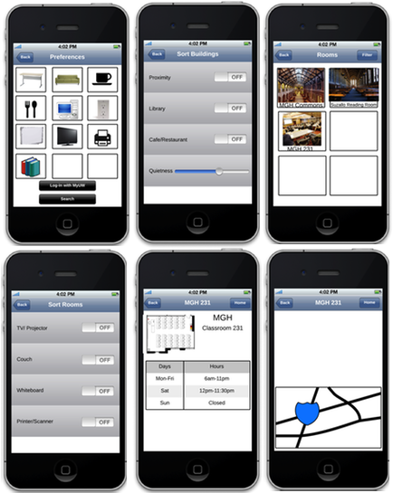

Armed with the information gleaned from our two evaluations, we then embarked on Draft 3 of the prototypes. In an attempt to create a higher fidelity prototype, we switched from using Balsamiq to Lucidchart, an online-based application that allowed for simultaneous multi-user editing. We found, however, that the tools were very inflexible, resulting in a mix of high-fidelity and low-fidelity objects, that ended up making the wireframes look unprofessional and undone. Below is a selection of the Lucidchart wireframes.
